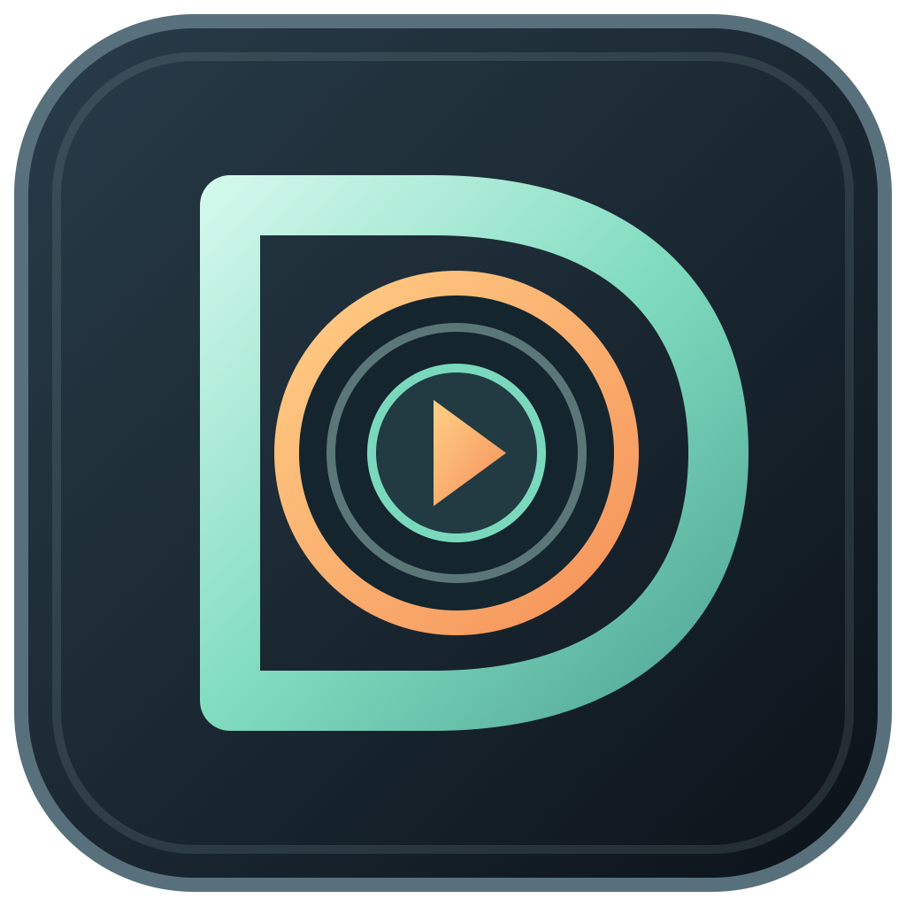

DECKSONANOW PLAYING● OFFLINE
00:00ELAPSED
DecksonaYOUR LISTENING ROOM
NOT CONNECTED
Connect to your Music Assistant server
MA DIGITAL AUDIO
00:00TOTAL
0%
50
LIBRARY SEARCH
TITLE / ARTISTTYPE
Search for music to begin.
PLAYLIST EDITOR0 ITEMS
UP NEXTTIME
Your queue will appear here.